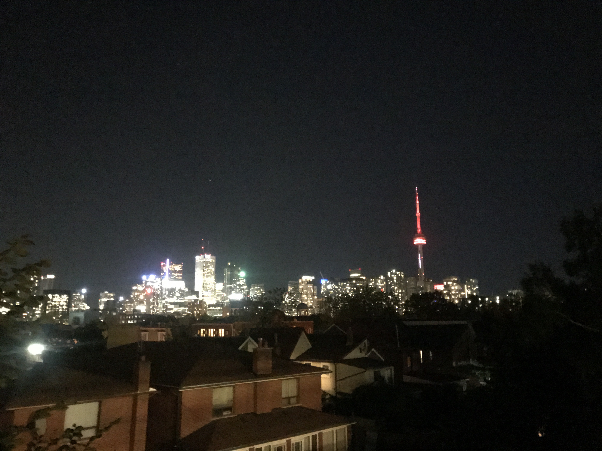

List of 50 things, you'll love about Canada - 10/50
1. Bar 422
A bar where 2 shots are for 4 dollars. Why is this great? When we are already fucked up, we can get more shots. Why is this even greater? The location
2. Gracies
My old go to grundgy and gross bar that I used to go to in University. Free entry for Thursday. Super cheap and sometimes has good music. Half the time it has live music which sucks. The other half has a DJ which is amazing
3. Tequila Jacks
One of the nastiest and grossest clubs in the world. Absolutely the best music. Never go here with just girls. Always go here with more guys than girls because there are creepy guys that will hit on you. Almost nowhere can beat this place for best music.
4. Rebel nightclub
Best and most expensive nightclubs possible. I will drive to this place and we will find free parking. We will chug a bottle of Henny in the car, once we get to the club, we smoke a joint. Then we get wavey for the amazing music and events that happen at this club
5. China town
Why you will love China town is because they have the cheapest and best food. The food that stays open 24/7. You also get a mix of Vietnamese food within this community as well. My itinerary is to go to Big Trouble, which is an Asian bar that is pretty fun. Then late at night, hop over to China town and grab some food.
6. Veld
An amazing music festival that I go to almost every year. You smoke, do drugs and whatever you want while blasting to the best EDM. Some amazing hits include Martin Garix, Steve Aoki, Tiesto and Chainsmokers (when they were good)
7. Budweiser Stage
This is the stage where I cried my little heart out to Daniel Salad. At this point, we weren’t too serious about our relationship but I couldn’t help but bare the thought of you being in my arms. We would sit down, our hearts heavy and you wrapped in my arms. We would sing, I would cry, you would pat pat pat. It’s a dream I want to do, to see some Alt/Indie band or singer that we both like and be cuddly during the concert.
8. Hug and love
Do you remember the time we met in Paris and just cuddled, kissed, talked and just connected in front of the Eiffel Tower? I want to do that all over Toronto. I just want to hug and kiss your cheeks and forehead wherever we go. Whether it be a red light, before crossing the street, at a park, in a restaurant, at a movie. I want to slip in a kiss. I want to hold you the hardest I can. I want to hug you and hold you so hard that you’ll never slip out of my hands.
9. CN Tower
The second most erect object in Toronto ;) Obviously the most iconic thing in Toronto is our CN Tower. We would then go on it to see the view, dine in a fancy restaurant called CN tower 360. We would be so ravishing and divine, we would look so good. We would have a nice steak and wine up there, overlooking our city. My queen. Our city.
10. Kensington
Probably a place you’ll love beyond words. The most hipster place where food, drinks, coffee, grocery stores are all so hip. There is literally a car that has plants growing out of it (art exhibit). I believe that this is the most hip place, having jazz bars, homemade greek breakfast restaurants, and Mexican dessert. This is the perfect place for photoshoot and place to just hangout whenever we want to chill.

Walking Day Dreams and Thoughts - February
- (Feb3) Going to veld togeter with Mahan, Fran, Liz and meeting a bunch of people i know at veld. Going on shoulders and cheerleader stance because you used to cheer. Singing to loud luxury body on mine. Being sooooo in love- (Feb4) walking with sammy in the morning realized that i dont like other people in the morning except for you. You are the only person that turns me into a sunshine and happy bunny every morning. U put a smile and laughing face post groggy face
- (Feb5) day dreamt about doing a road trip with you. We did one in france and croatia, if we can continue the tradition, i would so stop over at random places to fuck you
- (Feb6) imagine me on guitar and you on ukelele and we playing daniel caesar tog
- (Feb7) studying with you at a cafe. We dont need to understand each others work but we gib kisses and just work on our own stuff
- (Feb9) While hiking, there were a bunch of flowers on the side. I just want to pick the flowers for you. Each colour possible too. Yellow, red and orange. All given to my baby girl and placed behind your ear
- (Feb9) While hiking, I just want to go off trail and find beatiful scenes and make out with you in private. While hiking, I would be your biggest fan and take so many pictures of how beautiful you are.
- (Feb9) These hills and hikes are pretty extreme so I would totally be a gentleman and hold your hand while climbing up or down the rocks. While doing this, I wanna help make your hiking experience amazing by being your little hand holder and helper
- (Feb9) In Toronto, we have an amusement park called Wonderland. There is also a waterpark and while looking at things to do in Hanoi, I found Ho Tay waterpark. I was thinking about how amazing Wonderland in Toronto would be to take you. We would lie the on the lazy river, go down waterslides while holding onto each other. It would be the life
- (Feb10) Dreaming about the day where we can sit in a park (Trinity Bellwoods in Toronto would be my favorite), and smoke, drink, picnic and just listen to new music. I want to listen to Oh Wonder with you while enjoying getting kissed by you and the sun.
- (Feb11) Taking you to Niagara falls and taking you to the Mini Karting area where we can literally live out Mario Kart. It would be so much fun because you would be driving for the first time and we would be racing. Ahhhh just imagine riding beside each other
- (Feb11) Ultra Split. I want to take you to this festival, then take you on a road trip across Croatia in the summer. I want to travel this beautiful summer country with you.
- (Feb14) Today is V-day and the day of love, I cannot stop thinking about being with you. I woke up to the best gift possible. You are so thoughtful and sweet, making the best video possible. I get teary every time I watch it. Soon we will have V-day together, you will rock the hottest red dress where I would oggle you forever. We will go for a nice dinner, wine and then have the most passionate sex possible.
- (Feb 17) Niagara Falls is a place in Canada that I so want to take you. It has one of the most beautiful falls in the world. Additionally, I want to take you to Iguzu Falls (in Brazil) which I am going next week. I don’t know how I will experience this but I can’t wait to go and then take you there with me.
- (Feb18) Reading Lykke the book and just wanting to be happy together. Happiness has so many benefits including living longer, loving harder and just ah. I just want us to be happy together always. You’re the most important thing to me and I want nothing but that for you.
- (Feb19) I want to take you to Florida. We’ve been to Disney before and I want to take you to Disney World, which is x10 more epic. Your excitement and joy when we went to Disney in Paris was so pure. I want that forever, I want you to feel like that always. I will take you here and you will be like a little child again and the same excitement you had last time. I will make sure it will be the most optimal and the best and most enjoyable for my baby girl.
- (Feb20) Tonight we had a talk where I was …. in front of you ;) You were talking dirty to me and talking about a fantasy we had with you me and Hanh and omg. It was the hottest thing in the world.
- (Feb21) Black out day. I’m here in the dark, the only person here for me is you. I still feel so alone and I know it would be x10 worst if I didn’t have you. Im an absolute mess right now but I’m happy I have you
- (Feb22) You are my rescuer. At times like this, I need somebody just to talk to. I’m an absolute mess, emotional, and I feel like a burden. I wish I was there with you. Seriously need you right now :(
- (Feb23) I went to a music festival that played a bunch of gay songs and girly songs haha. I wish you were here to sing with me. I would so scream in your ears and just make out with you so hard. Need you so badly.
- (Feb24) I went to Christ of Redeemer and hiked down. It was one of the most extreme hikes I’ve ever been on and I want to take you!! We would have so much fun. I was just imagining how I would hold your hand going down on slipper roads, I would risk it all to protect you. Would be so much fun with you, but I did it alone instead.
- (Feb25) My baby girl wasn’t feeling so good, so I wanted to do something. What better thing to do than to buy you flowers. My beautiful princess deserve flowers at her place every day. I hope you know that you are the love of my life and I won’t stop loving you.
- (Feb26) I don’t want to travel without you anymore. My heart and soul hurts way too much to experience stuff like this without the love of my life. I need my princess to be with me always. I can’t fully enjoy it knowing it’s not with you.
- (Feb27) I’m here in bed at 3 am in the morning, wishing with all my soul that I came to Budapest instead of staying in Brazil. You are having a hard time now, and I wish I could be there. I’m trying to talk to you, cheer you up but it’s not the same as being there for you. I feel so bad because there’s so much pressure on you and I can’t do anything. I don’t want to say “soon”, I want to do something but I don’t know what to do. I want you to know baby, when things get bad or you need me the most, let me know and I will buy a ticket to you ASAP. I’m not scared and money won’t be an issue. I want to give you this option.
- (Feb29) Nguyen Quynh Thu, I love you beyond words. You are flying home today and I hope you have a safe and well flight. I hope when you return to Hanoi everything will be okay. I love you, please forigve me my love.
You are the love of my life and my bestfriend. Thank you for always staying strong and being considerate and empathetic. We talked when you had a layover in Doha. Unfortunately, you didn't have much sleep (probably because I wasn't there to protect you). I'm really glad you arrived to Hanoi safe and sound. You feeling happy makes me feel happy!! Positivity and love <3
Where it all began, Hungary
Dear Thu,You mean the absolute world to me. I hate how you are so far away from me. I am happy that our love is so strong that it reaches me here. I want to start off by saying you make me the happiest human being a live. You mentioned before loving each other is like a new type of love that no one can explain, and I think I finally understand it. It resonates into my bones and heart. I have been in love before but no love feels like this. I know fairy tales and Disney movies aren’t real, but I feel like whatever we have is the closest thing to that. I exaggerate this to death but you are my lover, you are my bestfriend and you are my inspiration.
You are my lover because I had an immediate attraction on our first date (I literally kissed you on the cheek). You are absolutely stunning, gorgeous and jaw dropping beautiful. I truly think you’re an exotic goddess. I know it’s crazy that you’re Vietnamese and Exotic but you just look so different from a Vietnamese (I think I do too). I know you’re Viet but you also don’t look Viet? Ya know? People think I’m always mixed, that makes me exotic too muahahahha.
You are my bestfriend because I can talk to you about anything. I never feel ashamed about bringing anything up to you. We laugh together, play together, work together and it always feels so natural. Living with you was a blast because we have that dynamic of being able to cuddle each other at one moment, to making food and cleaning the house together after, to fucking each other til your cervix bleeds. We are always so cooperative. There are endless examples but my favourite has to be the time in Croatia when we almost missed our bus. I would grab the bags and start searching the near busses, while you spread out to find the buses further away. This brought in so many sensations as we worked as a team and pumped so much adrenaline. This was like a team bonding activity that got me super hot and wanted to fuck you. Another instance that I love was when we went to Disney and you trusted me choosing the rides and the path we were going to take. I know you were scared of the first ride but you ended up having so much fun. Same with Buzz light year, same with every ride. You trusted me to guide you around the park and that I didn’t kill you on any rides. It’s just so good to call you my bestfriend because you’re absolutely fantastic. Quynh Thu Nguyen, you are my bestfriend.
You are my inspiration because in my notebook I wrote that visiting you in this time would be almost impossible. You and our love inspired me to do whatever it takes to be with you. As a boss ass bitch, I decided that I would spend Christmas at home with the family and that I needed to spend New years with you. I needed to spend one Holiday with family because I’m obliged and the rest I wanted with you. What better way than to spend NYE and the start of a decade and year with my baby girl. We set the tone right, we set our love life right. This is the start of something new. I love you so much baby girl. I want to be committed to you. With you it seems so easy. You rock my world. You inspire me and satisfy all my wildest dreams. I’m not interested in any other girl but you. You inspire me to be a better man, you inspire me to be more mature and loving and everything.
I hope talking to you, reading this, and my constant love will reassure you that I only want you. You are my GURL. I want to keep it that way. You have my utmost love and will continue receiving it. I also don’t want you to feel trapped or hard to breathe, as you have the option to leave whenever. I will warn you that I ain’t a quitter. I will fight for you.
I love you to the moon and back x2.
Be my beautiful moon, while I’ll be your sunshine.
Love always,
Nguyen Kim An Binh
P.s I have an idea for something interactive we should do when you’re free after you’re exam.

City of love, France

30/11/19
Post number 1. I truly felt so lovey dovey today. I felt so inspired and loved that I needed to output my love somehow. What better
combination than to combine my nerdy side and love. This way, we can make a powerpoint/slideshow of our love. We'll have something
to always cherish and to always look at. Truly thankful for you.
Hon em rat lau.


31/11/19
Love the way you think and work, the most ambitious man ive met and you can always pull them all off. How you can make all kind of surprises for me when you damn busy. The way your eyes brighten up when u smile. Also your voice. Urg. I didnt tell you how much i enjoy your finger on the piano too, one of the most therapeutic scene one can have. The list can go on and on, and i swear i will let you know allllll about how Im in love with you, just know that im very much enjoy your presence as a whole, i have ZERO thing to complain about you
About
What am I doing?
Hello beautiful, what I'm doing is creating a new method to show you how much you mean to me. Unfortunately Hungarian service is terrible and has lost
up to 3 of my items already. I really want to send you love and I thought that this would be a creative way to show you. Moving forward, in combination
with letters being sent, I will also be updating this website with content protruding to my love for you. This will include poems,
scribbles, pictures I like of you etc.
I hope you enjoy my love.